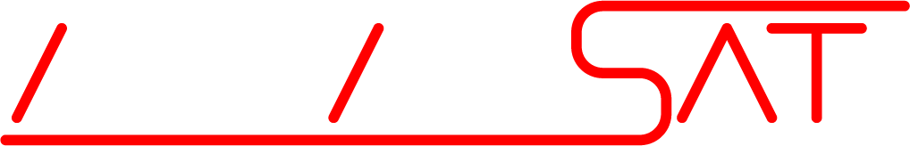

<!DOCTYPE html>
<html lang="en"></html>
<!--A kezdőoldalunk-->
<!--Ide majd jöhet sztem pl egy fotó mindnyájunkról, ami kitölti a helyet, meg azt a célt szolgálja majd sztem, h jobban áttekinthető legyen az oldal.-->
<html>
    <background></background>
    <head>
        <title>ÁrpádSat</title>
        <meta charset="UTF-8">
        <meta name="viewport" content="width=device-width, initial-scale=0.8">
        <link rel="stylesheet" href="style.css">
        <link rel="shortcut icon" type="image/x-icon" href="Cansat_key_visual_pillars.ico">
    </head>
    <body>
        <header class="header">
            
            <nav class="navigation">
                <a href="index.html" class="navigation2 navelem2"><ion-icon name="home"></ion-icon>Home</a>
                <a href="about.html" class="navigation2 navelem2"><ion-icon name="card"></ion-icon>About</a>
                <a href="docs.html" class="navigation2 navelem2"><ion-icon name="list"></ion-icon>Docs</a>
                <a href="tervek.html" class="navigation2 navelem2"><ion-icon name="barbell"></ion-icon>Plans</a>
                <a href="tesztek.html" class="navigation2 navelem2"><ion-icon name="checkmark-done"></ion-icon> Tests</a>
                <a href="calendar.html" class="navigation2 navelem2"><ion-icon name="calendar-number"></ion-icon> Schedule</a>
                <button class="languageen navigation2 navelem2">EN</button>
                <a href="hun/index.html"><button class="languagehu navigation2 navelem2" onclick="clh()">HU</button></a>
            </nav>
            <button class="checkresp restat" onclick="respat()"><ion-icon name="menu"></ion-icon></button>
            <button class="checkresp restat2" onclick="respat2()"><ion-icon name="close"></ion-icon></button>
        </header>
        <header2 class="header2">
            <nav class="navigation">
                <h3 class="navetext navelem">Navbar</h3>
                <a href="index.html" class="navigation2 navelem"><ion-icon name="home"></ion-icon>    Home</a>
                <a href="about.html" class="navigation2 navelem"><ion-icon name="card"></ion-icon>    About</a>
                <a href="docs.html" class="navigation2 navelem"><ion-icon name="list"></ion-icon>    Docs</a>
                <a href="tervek.html" class="navigation2 navelem"><ion-icon name="barbell"></ion-icon>    Plans</a>
                <a href="tesztek.html" class="navigation2 navelem"><ion-icon name="checkmark-done"></ion-icon> Tests</a>
                <a href="calendar.html" class="navigation2 navelem"><ion-icon name="calendar-number"></ion-icon> Schedule</a>
            </nav>
            <nav class="navigation ln">
                <button class="languageen navigation2 navelem2">EN</button>
                <a href="hun/index.html"><button class="languagehu navigation2 navelem2" onclick="clh()">HU</button></a>
            </nav>
        </header2>
        <h2 class="title">Home page</h2>
        <about class="about">
            <div class="about-intro about-content">
                <h2>Welcome to the website of the ÁrpádSat team, which entered the CanSat competition!</h2>
                <h3>The ÁrpádSat team participates in the CanSat competition, which is a competition designed for high school students to present and promote the space industry. The European Space Agency (ESA) announces it every year with the aim of allowing students to experience what it's like to participate in a real space project. Applicants gain a lot of experience, e.g. in radio technology, circuit design, and can also learn the precision required by the space industry. Competitors can meet a lot of students with similar interests, and the winners of the final can increase their international connections during the competition. <br>
                    What is CanSat?<br>
                    CanSat is a simulation of a real satellite with all the systems a satellite should have. Its volume is the same as that of a can of soda (hence its name). The challenge for the students is to design all the subsystems that can be found on a satellite in this small space:
                     Power supply, sensors, communication system.
                     In the competition, the CanSat satellites are launched by rocket to a height of approximately 1 km. Here, they detach from the carrier and begin their mission, which may be a scientific experiment or a technology demonstration. <br>
                     After a safe landing, the teams analyze and present the collected data. <br> You can find out more about the competition on the <a href="https://www.cansatverseny.hu/mi-a-cansat">CanSat website</a>
                </h3>
            </div>
            <div class="about-intro about-content">
                <h2>And what our team is doing?</h2>
                <h3>The ÁrpádSat satellite will measure the strength and the direction of the wind, temperature, humidity and air pressure. It will determine its position with the help of a GPS sensor and transmit all this to the ground station with the help of a LoRa radio module. Here on the website, you can find out more about our mission and concept from the plans, tests and especially from the CDR document already published on the documents page.</h3>
            </div>
            <div class="about-intro about-content">
                <h2>News</h2>
                <div class="about-content2 about-content index-content">
                    <h3>We also fixed the radio operation problem, so all the electronics on the CanSat are working fine!</h3>
                    <iframe width="378" height="162" src="https://www.youtube.com/embed/hTL9g6yl2gE?si=u1YCzrsQ_BCW7iby" title="YouTube video player" frameborder="0" allow="accelerometer; autoplay; clipboard-write; encrypted-media; gyroscope; picture-in-picture; web-share" allowfullscreen></iframe>                
                </div>
                <div class="about-content2 about-content index-content">
                    <iframe width="378" height="162" src="https://www.youtube.com/embed/VyTabN4vBxI?si=ScIlHRPqfKzRSvL2" title="YouTube video player" frameborder="0" allow="accelerometer; autoplay; clipboard-write; encrypted-media; gyroscope; picture-in-picture; web-share" allowfullscreen></iframe>                
                </div>
                <div class="about-content2 about-content index-content">
                    <iframe width="378" height="162" src="https://www.youtube.com/embed/qk9Nb_YrgpE?si=4UL1FeDBOCDLVttk" title="YouTube video player" frameborder="0" allow="accelerometer; autoplay; clipboard-write; encrypted-media; gyroscope; picture-in-picture; web-share" allowfullscreen></iframe>
                </div>
                <div class="about-content2 about-content index-content">
                    <iframe width="378" height="162" src="https://www.youtube.com/embed/Ov0oo_-O9Eo?si=JZ82pHnnGKAYh7ld" title="YouTube video player" frameborder="0" allow="accelerometer; autoplay; clipboard-write; encrypted-media; gyroscope; picture-in-picture; web-share" allowfullscreen></iframe>
                </div>
                <div class="about-content2 about-content index-content">
                    <iframe width="378" height="162" src="https://www.youtube.com/embed/h6hZgQY3ry4?si=8omyC5HgKnmkFzUD" title="YouTube video player" frameborder="0" allow="accelerometer; autoplay; clipboard-write; encrypted-media; gyroscope; picture-in-picture; web-share" allowfullscreen></iframe>
                </div>
            </div>
        </about>
        <script src="script.js"></script>
        <script type="module" src="https://unpkg.com/ionicons@5.5.2/dist/ionicons/ionicons.esm.js"></script>
        <script nomodule src="https://unpkg.com/ionicons@5.5.2/dist/ionicons/ionicons.js"></script>
    </body>
</html>
